branch_001 extra
gt=— err=— z=403.1 r=1.3847
- vesselness 0.2563
- radius_cv 0.2631
- circularity 0.6342
- path_mm 12.09
- mean_HU 183.6
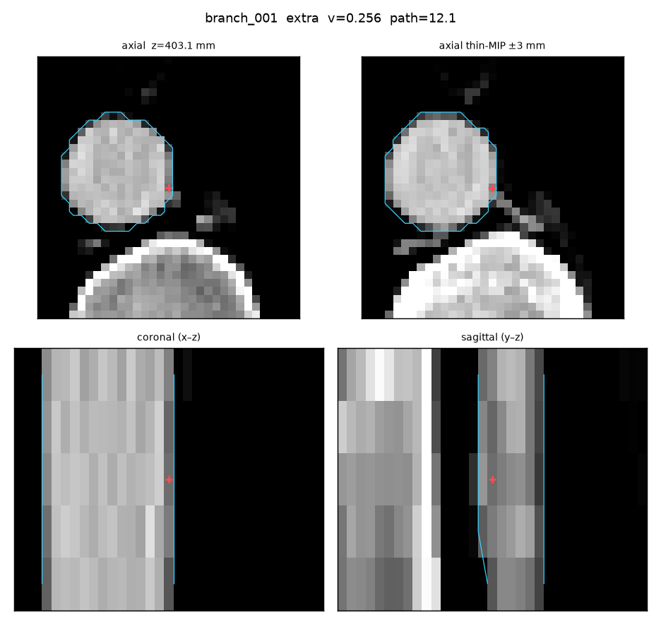
gt=— err=— z=403.1 r=1.3847

gt=— err=— z=350.9 r=1.5694
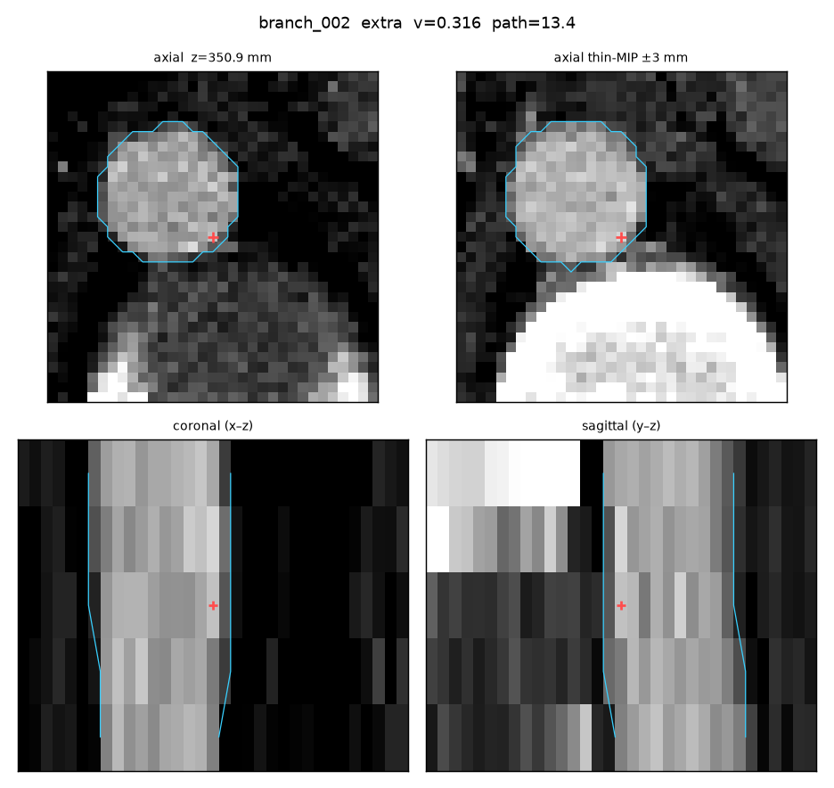
gt=— err=— z=348.24 r=1.5128
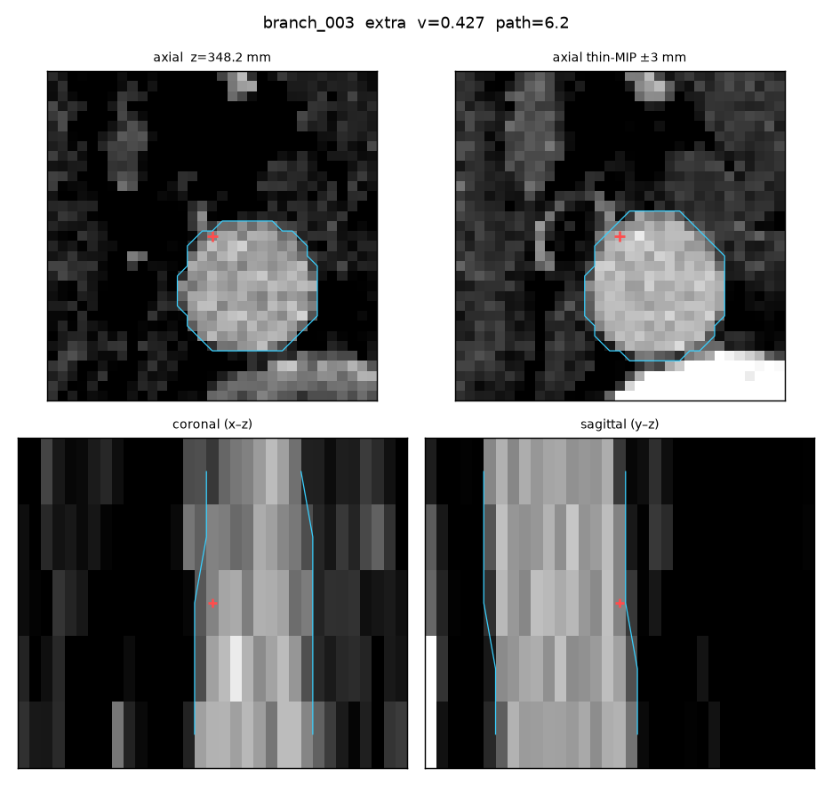
gt=branch_005 err=2.17 z=338.46 r=2.658
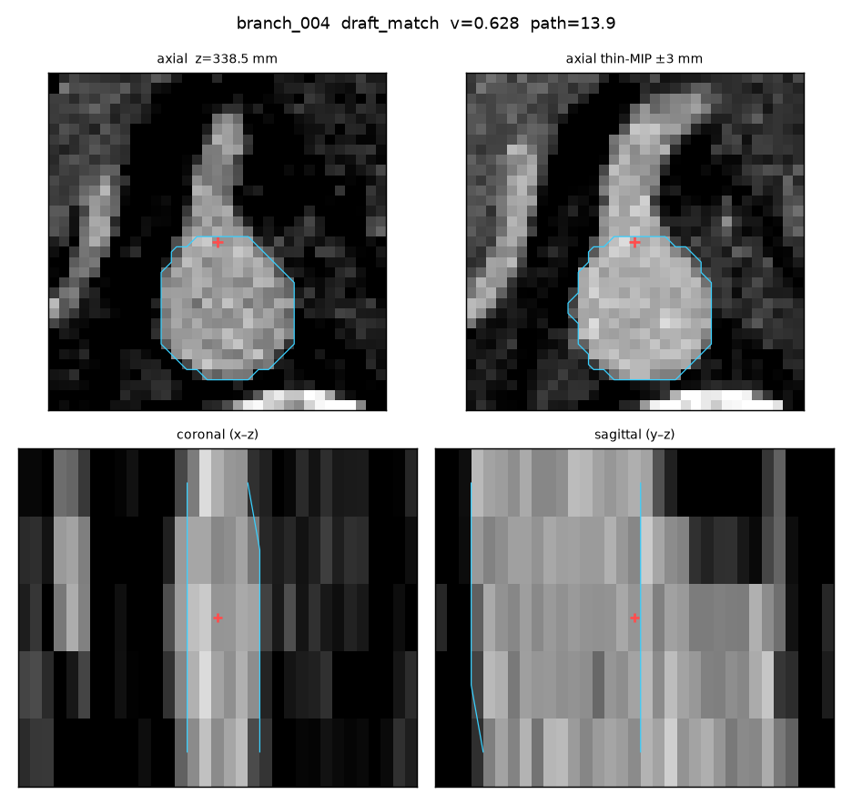
gt=branch_004 err=1.54 z=323.66 r=4.1173
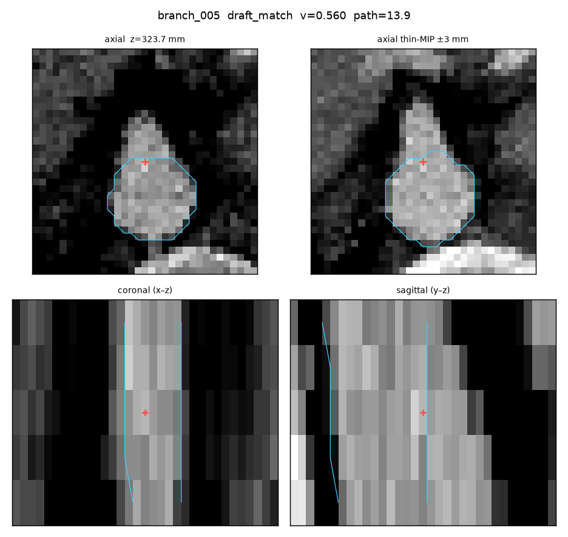
gt=branch_003 err=1.61 z=314.84 r=2.5716
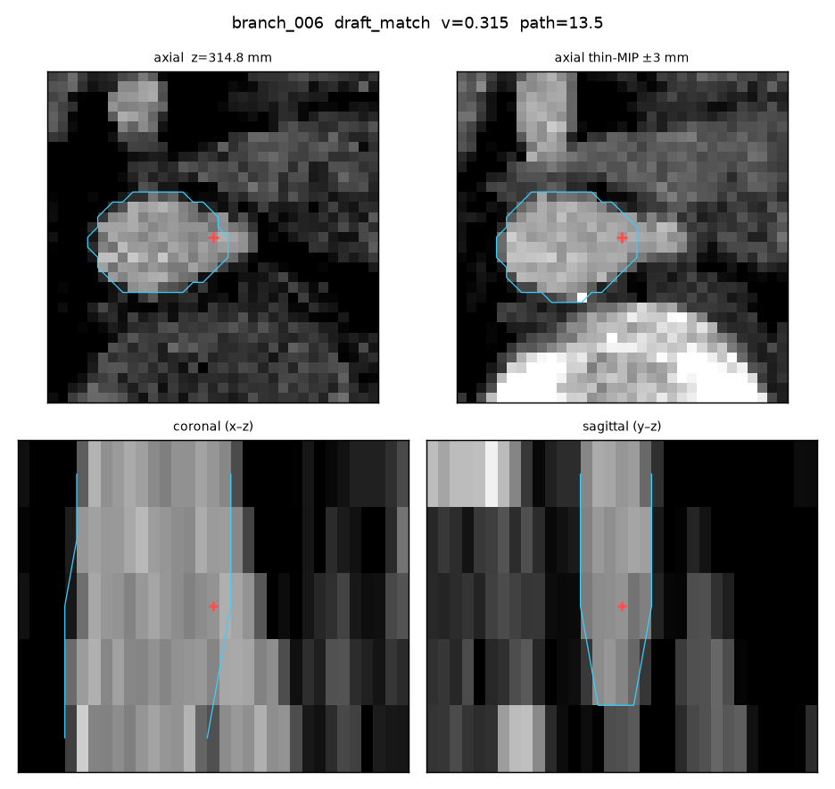
gt=branch_002 err=1.68 z=308.54 r=2.1374
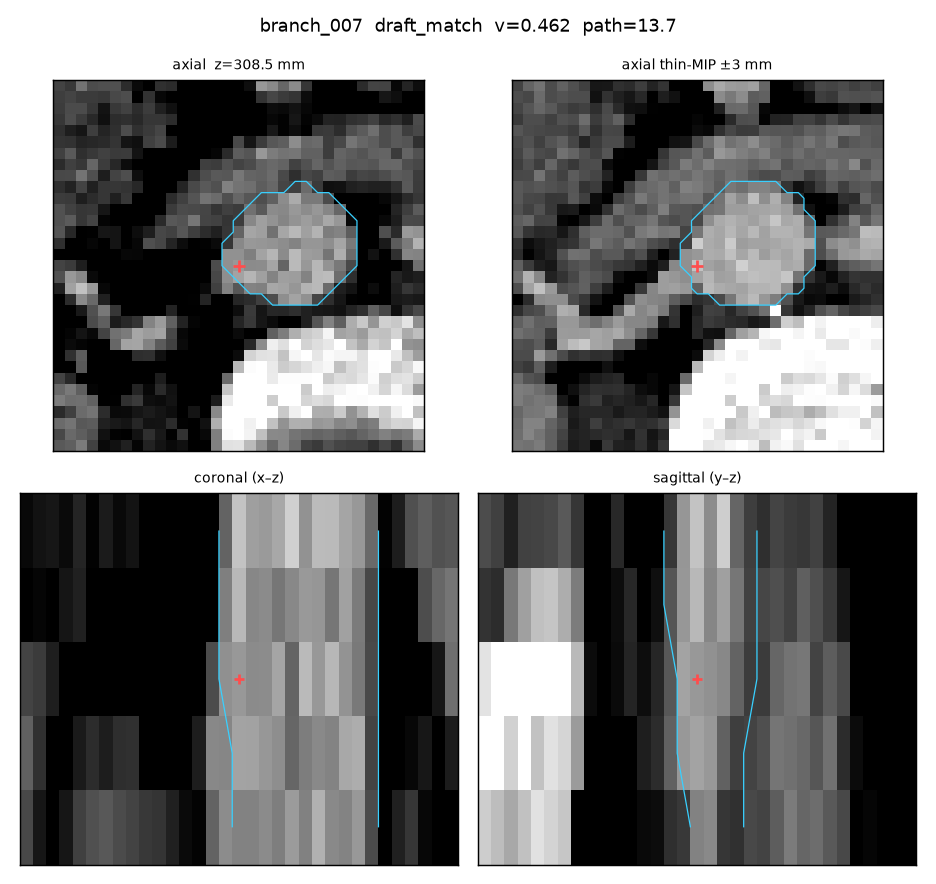
gt=— err=— z=303.03 r=2.7532
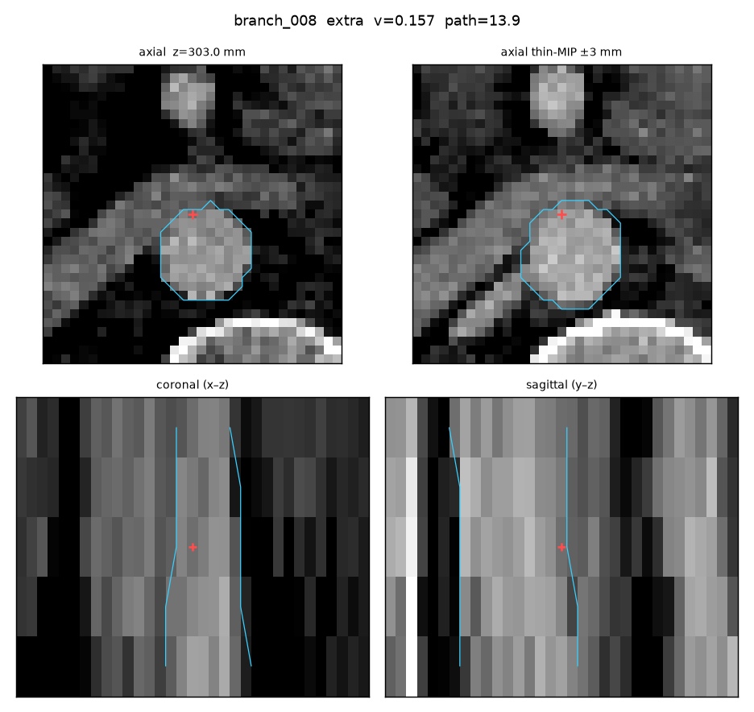
gt=branch_006 err=2.58 z=252.38 r=1.7865
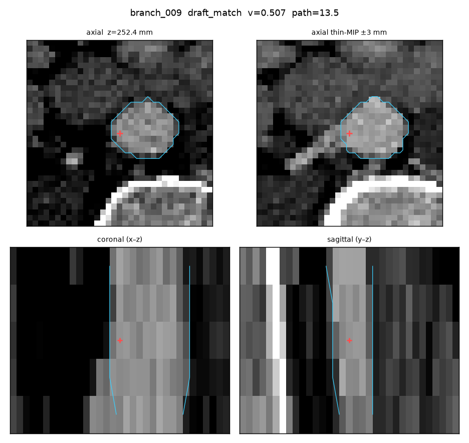
gt=branch_001 err=1.48 z=242.6 r=2.1693
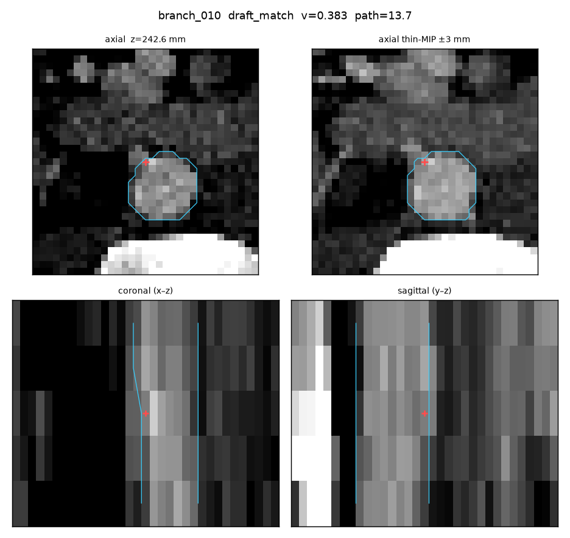
gt=— err=— z=209.6 r=1.5416
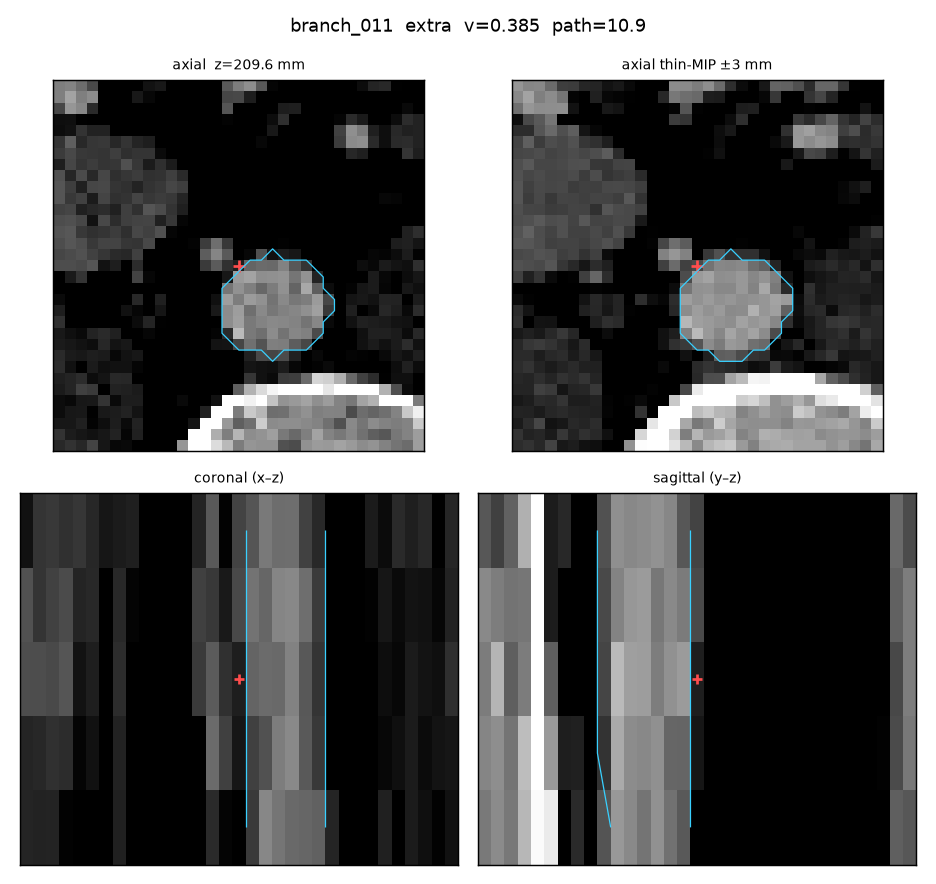